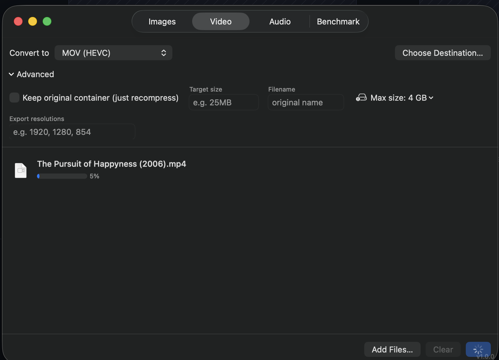
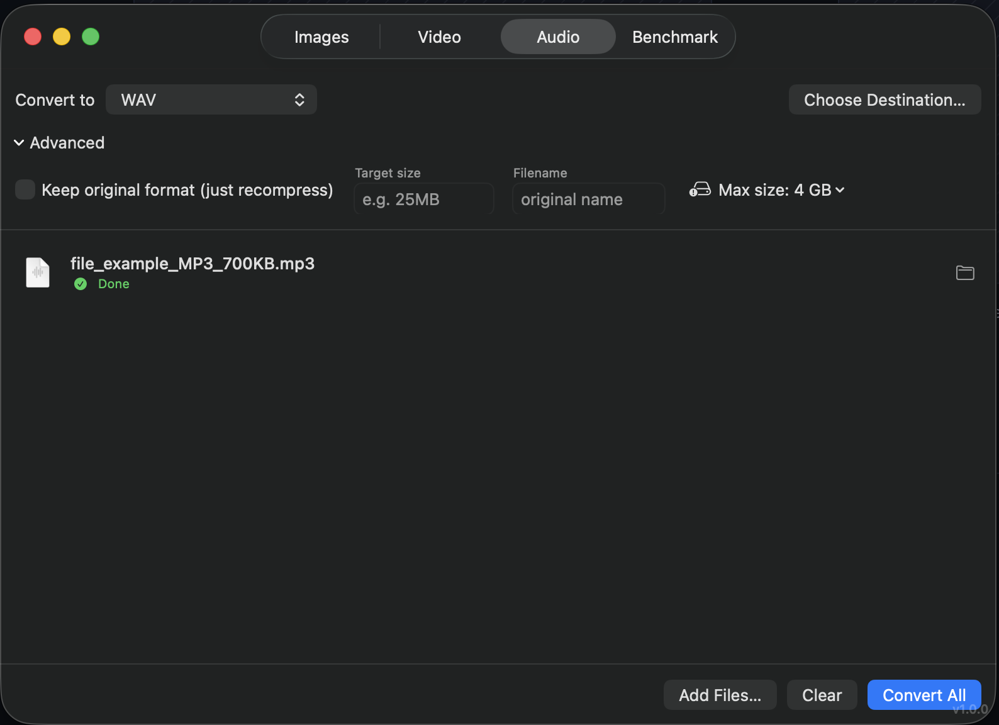
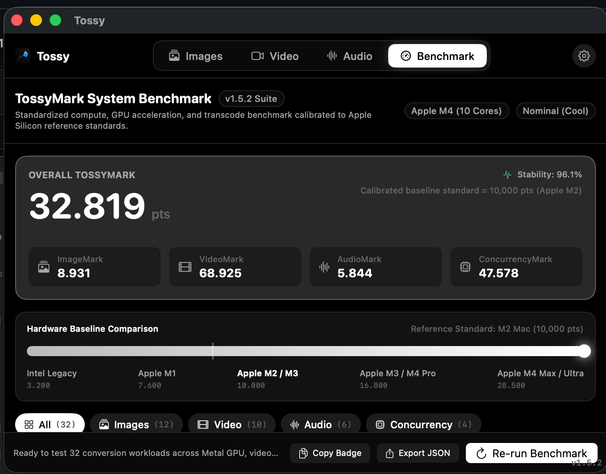

macOS · universal file converter
Convert almost anything.
Without opening Terminal.
A native macOS app for images, video, and audio. GPU-accelerated Core Image and hardware VideoToolbox encoding where Apple's own frameworks reach, and a bundled, self-contained ffmpeg for everything else.
What it converts
Images, video, and audio, all in one native app, all processed locally on your Mac.
20 output formats, including RAW and vector sources
PNG, JPEG, HEIC, WebP, AVIF, JPEG XL, TIFF, PSD, ICNS, EXR, and more, plus RAW straight from a camera (CR2, CR3, ARW, DNG, and most others) and rasterizing SVG or PDF pages. Compress to a target file size, resize, or export several resolutions from one source in a single pass.
28 containers and codecs
Hardware-encoded H.264, HEVC, and ProRes via VideoToolbox, or MKV, WebM, AV1, DNxHD, DV, and the rest of the container zoo through a bundled ffmpeg. Nothing to install separately.
14 formats, lossy and lossless
MP3 through FLAC through Opus. Target-size compression adjusts bitrate for lossy formats and sample rate for PCM ones, depending on what the format actually supports.
A real 0–100 score
Times actual conversions on your machine and scores them against a calibrated baseline, so the number means the same thing on your Mac as it does on someone else's, not just whatever ran fastest this time.
See it running
Screenshots go in /screenshots: drop in the four files named below.

1280 × 800

1280 × 800

1280 × 800

1280 × 800
Why native and ffmpeg
Apple's own frameworks are genuinely good at what they cover (RAW decoding, HEIC, hardware H.264/HEVC/ProRes), but they stop well short of MKV, most legacy codecs, and most audio formats. Rather than pretend otherwise, EasyConvert uses Core Image and VideoToolbox where they reach, and falls back to a bundled, self-contained ffmpeg (plus the WebP and JPEG XL reference tools) for everything else. No Homebrew, no separate install, no terminal.
Questions
Is EasyConvert free?
Yes. It's free and open source under GPL-3.0. No account, no subscription, no ads.
Does EasyConvert upload my files anywhere?
No. Every conversion runs locally on your Mac, using Apple's own frameworks or the bundled ffmpeg. Nothing is ever sent to a server.
Do I need to install ffmpeg or Homebrew separately?
No. ffmpeg and the other tools EasyConvert needs are bundled inside the app and run standalone.
What macOS version does it need?
macOS 14 or later, on Apple Silicon or Intel.
Can I compress a file to an exact size?
Yes. Set a target size like 25MB in the Advanced section and EasyConvert searches for a quality or bitrate that fits.
What formats does it support?
20 image formats, 28 video formats, and 14 audio formats, including HEIC, RAW camera files, MKV, WebM, and FLAC. Full list in the README.